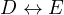
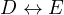
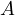
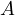

Theorem 1. Consider the chord  in the circle
in the circle  . Let the circle
touch
. Let the circle
touch  at a point and the circle
at a point and the circle  at a point
at a point  . Prove that the
line passes through
. Prove that the
line passes through  , the middle of the larger arc .
, the middle of the larger arc .
This paper compiles a collection of geometric proofs and related constructions that center around Sawayama’s Lemma and Thebault’s theorem. The document begins with the presentation and proof of the Shooting Lemma, which establishes a relationship between a chord in a circle, a tangent circle, and the midpoint of the larger arc. Using this foundational lemma, the proofs of Sawayama’s Lemma and Verrier’s Lemma follow, demonstrating the collinearity of specific points associated with inscribed triangles and tangent circles. The final section extends these results to prove Thebault’s theorem, generalizing the principles of Sawayama’s and Verrier’s Lemmas to a broader context involving two tangent circles.
Theorem 1. Consider the chord in the circle . Let the circle
touch at a point and the circle at a point . Prove that the
line passes through , the middle of the larger arc .
 , which transforms
, which transforms  into
into  . Then,
. Then,  is mapped to and to
, where
is mapped to and to
, where  and
and  are the intersections of and with the
tangent from
are the intersections of and with the
tangent from  to
to  respectevely.
respectevely.
Then, due to , and because
touches  and finally . Thus, ,
however due to
and finally . Thus, ,
however due to  touching we know that and
, consequently . In other words is
the bisector of which means that
touching we know that and
, consequently . In other words is
the bisector of which means that  is the middle of the larger arc
.
is the middle of the larger arc
.
In fact, due to we conclude that touches , consequently,
| (1) |
And due to  being the middle of it must be that , thus,
. Combining these results we get a nice formula,
being the middle of it must be that , thus,
. Combining these results we get a nice formula,
| (2) |
The figure can also show a lot of interesting and fundemental properties if one
performs an inversion centered at the point with a radius of .
Then through this process and because  must continue to touch
and (in other words
must continue to touch
and (in other words  and ) and it must be in the same
angle from
and ) and it must be in the same
angle from  , it must be the case that under the inversion.
Consequently, it must mean that  and thus and
, it must be the case that under the inversion.
Consequently, it must mean that  and thus and  are colinear.
Another consequence of such argument is that the length of the tangents from
are colinear.
Another consequence of such argument is that the length of the tangents from  to
to  are equal to .
are equal to .
Now let us consider the following, a bit stronger statement,


This is also quite a trivial statement, noticing from the previous statement
that and we can conclude that
which by the power of the point  concludes that
concludes that
 is cyclic. Now, all that is left to notice is that,
due to
is cyclic. Now, all that is left to notice is that,
due to  touching
touching  and due to being
cyclic, thus
and due to being
cyclic, thus  and is cyclic.
and is cyclic.
It is a bit interesting to see the behaviour of as one moves
 along
along  . When we get an already proven statement that
is cyclic and when we see that
. When we get an already proven statement that
is cyclic and when we see that  touches .
However, there is a more important position of
touches .
However, there is a more important position of  which has the following
property.
which has the following
property.
 . Consequently,
. Consequently,
| (3) |
due to  being cyclic. Which implies that touches
being cyclic. Which implies that touches  .
.


 till the intersection with , let that
intersection point be
till the intersection with , let that
intersection point be  . Then, due to the Trillium theorem it is clear
that . This allows one to apply the last lemma to this
configuration. Here
. Then, due to the Trillium theorem it is clear
that . This allows one to apply the last lemma to this
configuration. Here  is serves as the arbitrary point from the last lemma and
due to it must be that the intersection of with
is serves as the arbitrary point from the last lemma and
due to it must be that the intersection of with  ,
let that point be , must be the tangency point from
,
let that point be , must be the tangency point from  to
to  .
.
However, that tangency point is  by definition, thus and
consequently
by definition, thus and
consequently  , and
, and  are colinear.
are colinear.
Now consider what happens when one moves  along
along  , specifically
let . Then, Sawayama’s lemma will transform itself into Verrier’s
lemma.
, specifically
let . Then, Sawayama’s lemma will transform itself into Verrier’s
lemma.


This statement has other proofs which do not involve Sawayama’s lemma, one of the most notable ones is the following which showcases the mechanism at play.
 in points
in points  and
and  ,
by the shooting lemma it must be that
,
by the shooting lemma it must be that  and are the middle’s of arcs
and . Consequently they must lie on the lines and .
and are the middle’s of arcs
and . Consequently they must lie on the lines and .
All that is left is to apply Pascal’s theorem for and conclude that
 ,
,  and
and  are colinear.
are colinear.
A beautiful lemma about the is the following,
| (4) |
| (5) |
Thus, it must be that  and
and  lie on the radical axis of and
lie on the radical axis of and  , in
other words
, in
other words  is the radical axis of
is the radical axis of  and
and  .
.


Notice, due to Sawayama’s lemma it must be that , where
are the tangency points of  with
with  and
and  and are
the tangency points of
and are
the tangency points of  with and
with and  . With this in mind I suggest
looking at the problem from another perspective, is the inner tangent
between
. With this in mind I suggest
looking at the problem from another perspective, is the inner tangent
between  and
and  and is the outer tangent between
and is the outer tangent between  and
and  .
One must prove that .
.
One must prove that .
As it turns out this statement is true for arbitrary circles  and
and  .
.


This is a wonderful statement to consider on its own. Proving this statement
automatically proves Thebault’s theorem. Let us consider the homothepy center
which transforms  to
to  (in other words the intersection of the two outer
common tangents). Let
(in other words the intersection of the two outer
common tangents). Let  and be the points of tangency of the common
tangent of and
and be the points of tangency of the common
tangent of and  . Let  and
. Let  and  be the intersection of
with and
be the intersection of
with and  respectively. Consider the triangle , then
respectively. Consider the triangle , then
 is its incircle and
is its incircle and  is its excircle. Then, by the Iran lemma the
projection of
is its excircle. Then, by the Iran lemma the
projection of  onto the bisector of must lie on both and
.
onto the bisector of must lie on both and
.
In other words, the projection of  onto the bisector of is
. However, the projection of
onto the bisector of is
. However, the projection of  onto the bisector of
onto the bisector of  obviously is part of . Thus, and the lemma is proven,
proving Thebault’s theorem.
obviously is part of . Thus, and the lemma is proven,
proving Thebault’s theorem.